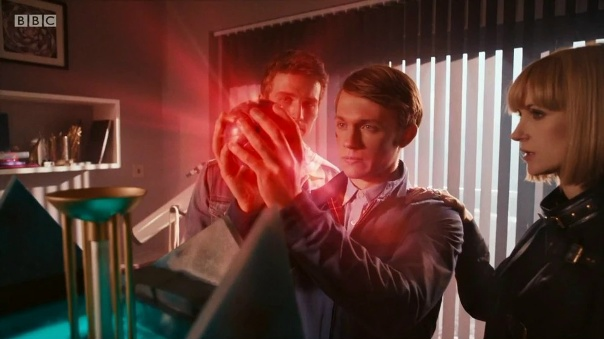

Эра Двенадцатого Доктора
<<< НАЗАД ||| 5. Почти храброе сердце ||| ДАЛЬШЕ >>>
MVO [Jaskier] | MVO [BaibaKo] | MVO [ColdFilm]
+ Original [ENG]
Субтитры: Русские, форсированные и Русские {TrueTransLate} - при выборе английских
 | Весь 1-й сезон (8 серий) |
Brave-ish Heart
Дата выхода: 12 ноября 2016
Формат: 45-минутный эпизод
| Варианты озвучек: | * Разные: смотрите по инструкции |
|---|---|
| Скачивание и просмотр: |
Оказавшись в царстве Теневого Рода, Эйприл понимает, что пути назад нет и ей придётся победить Коракина. На Земле нашествие лепестков стремительно набирает оборот. Столкнувшись с угрозой исчезновения планеты, новая директриса Дороти пытается заставить Чарли сделать роковой выбор, однако у мисс Квилл припасены другие планы на его счёт. В то время как Чарли, Маттеуш и Таня стремятся предотвратить уничтожение человеческой расы лепестками, Эйприл должна противостоять ужасающей силе Коракина за много световых лет от дома

